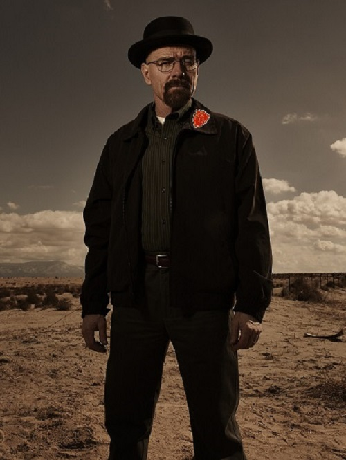
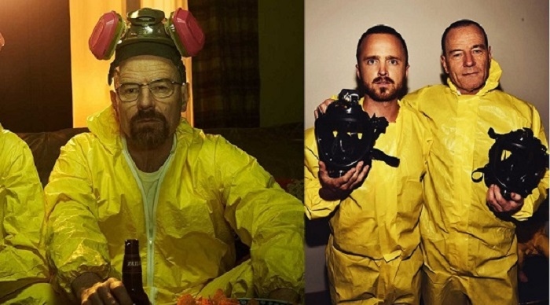

Na specjalne okazje i uroczystości strój powinien wyglądać bardziej elegancko, więc nie może zabraknąć pięknej czerwonej tarczy. Składa się on z czarnych jeansów i kurtki, koszuli oraz czarnego kapelusza.
Strój roboczy będzie wyglądać tak, jest to żółte ubranie ochronne, na głowę można założyć maskę, aby wyglądać bardziej profesjonalnie jak panowie na obrazku. Jest on praktyczny, nie zabrudzimy swoich ubrań podczas jakiejkolwiek pracy.
